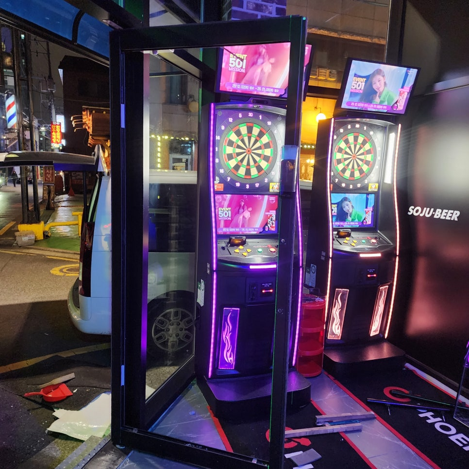
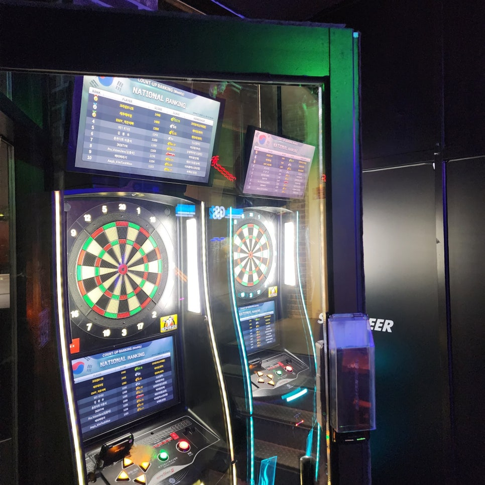

강화도어수리는 문짝 전체를 바꾸지 않고 유리만 새로 넣어 끝나는 경우가 많습니다. 서울 관악구의 한 매장은 겨울로 접어들며 부딪힌 일 없이 출입문유리에 금이 갔는데, 영업이 끝난 저녁에 24T 복층유리로 바꾸고 손잡이·힌지·도어클로저는 그대로 다시 달았습니다.
한눈에 보기
| 작업 | 매장 출입문 강화도어 유리 교체 |
|---|---|
| 지역 | 서울 관악구 신림동 |
| 장소 | 상가 입구 |
| 새 유리 | 24T 복층유리(세이프도어용) |
| 재사용 | 손잡이, 힌지, 도어클로저 |
| 작업 시간 | 영업 종료 후 저녁 |




금 간 매장문, 테이프로 버텨도 되나요?
도착했을 때 문 유리 전체에 금이 퍼져 있었고, 테이프로 임시로 붙여 둔 상태였습니다.
금 간 유리를 계속 쓰면 문을 여닫는 진동으로 조각이 떨어져 손님이 다칠 수 있어 빨리 바꾸는 것이 좋습니다.
강화도어수리 순서
- 문틀과 하드웨어 상태를 보고, 유리만 바꾸면 되겠다고 판단했습니다.
- 떼는 과정에서 유리 조각이 떨어질 수 있어, 손님이 오가지 않는 저녁으로 작업 시간을 잡았습니다.
- 다시 쓸 손잡이·힌지·도어클로저가 상하지 않게 하면서 금 간 유리를 철거했습니다.
- 새 24T 복층유리(세이프도어용)를 넣어 고정하고 기존 하드웨어를 다시 연결했습니다.
- 문을 여러 번 여닫아 작동을 확인했습니다. 매장 입구 모습은 예전 그대로입니다.
강화도어수리 비용은 얼마인가요?
유리만 바꾸는 경우 보통 35만~50만 원 선입니다.
유리 규격과 문 상태, 작업 환경에 따라 달라질 수 있습니다.
자주 묻는 질문
- Q. 출입문유리가 깨지면 문 전체를 바꿔야 하나요?
- 문틀과 하드웨어가 괜찮다면 유리만 다시 넣을 수 있습니다. 문 전체를 새로 맞추는 것보다 부담이 적습니다.
- Q. 영업 중에도 작업이 되나요?
- 가능은 하지만, 떨어진 유리 조각을 손님이 밟을 수 있어 이 현장은 영업이 끝난 저녁에 작업했습니다.